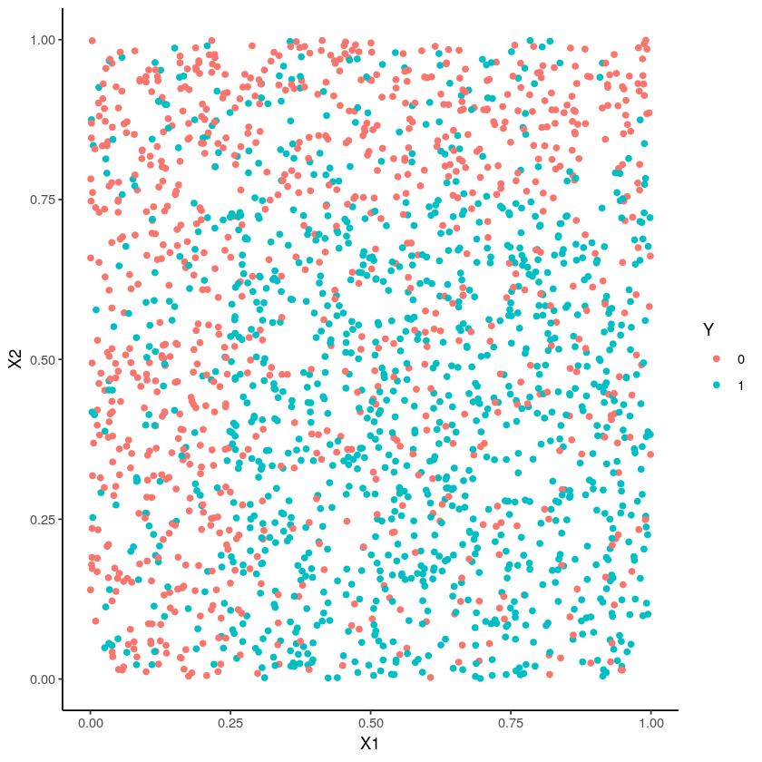

Exemple R¶
options(jupyter.plot_mimetypes = c("text/plain", "image/png" ))
n <- 2000
seuil <- 0.25
set.seed(1234)
X1 <- runif(n)
X2 <- runif(n)
U <- runif(n)
Y <- rep(0,n)
Y[X1<=0.25 & U<=seuil] <- 1
Y[X1>0.25 & X2>=0.75 & U<=seuil] <- 1
Y[X1>0.25 & X2<0.75 & U>seuil] <- 1
#plot(X1,X2,col=Y+1)
donnees <- data.frame(X1,X2,Y)
donnees$Y <- as.factor(donnees$Y)
indapp <- 1:1500
dapp <- donnees[indapp,]
dtest <- donnees[-indapp,]
library(ggplot2)
ggplot(donnees)+aes(x=X1,y=X2,color=Y)+geom_point()+theme_classic()
